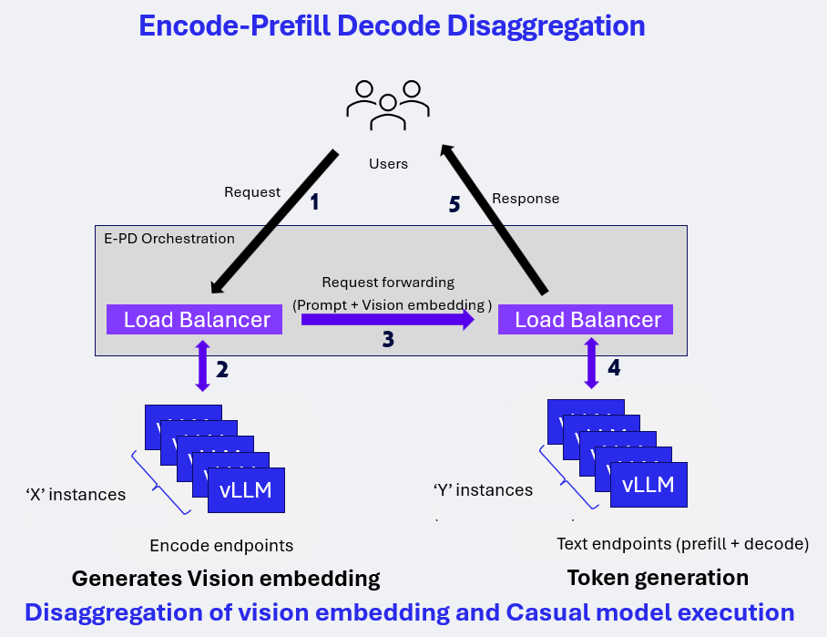

Multimodality Support with vLLM¶
Overview¶
vLLM on Qualcomm Cloud AI accelerators support multimodal inference — the ability to process both text and non-text inputs such as images and audio within a single model request. This enables use cases such as visual question answering, image captioning, document understanding, and speech-to-text transcription, all served through a standard OpenAI-compatible API.
Two deployment modes are supported:
Single QPC — a single compiled model handles both vision encoding and text generation. Suitable for lower-throughput or simpler deployments.
Dual QPC — vision encoding and text generation run as separate compiled models (QPCs). This is the recommended approach for production deployments as it enables higher batch sizes and independent scaling of each stage.
For large-scale deployments, Encode-Prefill-Decode (E-PD) disaggregated serving extends the dual QPC model by running the vision encode and text prefill/decode stages as fully independent vLLM endpoints, allowing each to scale horizontally on separate device pools.
Supported modalities:
Vision-Language Models (VLMs) — image + text input, text output (LLaVA, LLaMA-3.2-Vision, Qwen2.5-VL, Granite Vision, and others)
Audio (Speech-to-Text) — audio input, text output (Whisper family)
Limitations¶
Multimodal models support batch size greater than 1 only when using dual-QPC or Encode–Prefill–Decode (E-PD) disaggregated serving modes. Single-QPC execution is limited to batch size 1.
Prefix caching for multimodal models is limited to initial tokens (for example, system prompts). Prefix caching is not supported for multi-turn multimodal chat scenarios.
Speculative decoding (PLD, SPD, Turbo) is not supported for multimodal models.
LoRA / LoRaX is not supported for multimodal models.
For large context lengths (≥32K), chunked prefill may need to be explicitly disabled to avoid runtime failures.
In disaggregated serving mode, the prefill batch size must not exceed the number of prefill (PP) stages. Exceeding this may result in engine failures or segmentation faults.
During disaggregated serving, stopping the vLLM server (for example, using Ctrl-C) may take several minutes to fully terminate all processes.
On-device sampling is supported only for the language decoder stage and has been validated primarily with selected VLMs (for example, Qwen2.5-VL). The feature is functional but not performance-optimized.
Models supported with QAIC¶
Vision-Language Models¶
Architecture |
Model Family |
Representative Models |
vLLM Single QPC |
vLLM Dual QPC |
|---|---|---|---|---|
LlavaForConditionalGeneration |
LLaVA-1.5 |
llava-hf/llava-1.5-7b-hf |
✔️ |
✔️ |
MllamaForConditionalGeneration |
LLaMA-3.2-Vision |
meta-llama/Llama-3.2-11B-Vision-Instruct |
✔️ |
✔️ |
LlavaNextForConditionalGeneration |
Granite Vision |
ibm-granite/granite-vision-3.2-2b |
✕ |
✔️ |
Qwen2_5_VLForConditionalGeneration |
Qwen2.5-VL |
Qwen/Qwen2.5-VL-3B-Instruct |
✕ |
✔️ |
Gemma3ForConditionalGeneration |
Gemma-3 |
google/gemma-3-4b-it |
✕ |
✕ |
Notes¶
A check mark (✔️) indicates validated vLLM support.
A cross (✕) indicates that vLLM support is not validated.
Single QPC and Dual QPC indicate different Qualcomm Program Container (QPC) deployment modes.
Audio Models (Speech-to-Text)¶
Architecture |
Model Family |
Representative Models |
vLLM Support |
|---|---|---|---|
WhisperForConditionalGeneration |
Whisper |
openai/whisper-tiny |
✔️ |
WhisperForConditionalGeneration |
Whisper |
openai/whisper-base |
✔️ |
WhisperForConditionalGeneration |
Whisper |
openai/whisper-small |
✔️ |
WhisperForConditionalGeneration |
Whisper |
openai/whisper-medium |
✔️ |
WhisperForConditionalGeneration |
Whisper |
openai/whisper-large-v2 |
✔️ |
WhisperForConditionalGeneration |
Whisper |
openai/whisper-large-v3-turbo |
✔️ |
Notes¶
A check mark (✔️) indicates validated vLLM support.
A cross (✕) indicates that vLLM support is not validated.
Audio models are supported under the Speech-to-Text task using the Whisper architecture.
For more details, see: Validated Models and vLLM Support — Efficient Transformers Documentation
vLLM flags and environment variables¶
Input Arg |
Default Value |
Setting Required for Qaic runs |
|---|---|---|
VLLM_QAIC_QPC_PATH |
None |
Set this flag with the path to qpc. VLLM loads the qpc directly from the path provided and will not compile the model. For the dual QPC approach for multimodality, provide both QPC paths separated by a colon: ` path/to/vision_qpc:p ath/to/language_qpc` |
Dual QPC Approach¶
For vision-language models, vLLM supports two approaches: kv_offload=True (dual QPCs approach) and kv_offload=False (single QPC approach)
The dual QPCs approach is the recommended method. It splits the model to perform image encoding and output generation in two different QPCs.
In vLLM, to support dual QPC, one LLM is initialized for the embedding
task and runs encoding to produce image representations. A second LLM is
initialized for the generation task and runs generation to produce
completions for the input prompts. The first LLM’s outputs are passed to
the second LLM via the host in this case. To enable the dual QPC
approach, each of the two LLMs must be provided with
override_qaic_config={"kv_offload": True} during initialization.
In the case of text-only prompts, only the second LLM will be used.
Additionally:
For InternVL models, num_patches can be set via the override_qaic_config parameter.
For LLaMA 4, max_patches can be configured through mm_processor_kwargs.
The diagram below explains the dual QPCs approach in comparison to the single QPC approach.

Example Code and Run Command¶
# OpenGVLab/InternVL2_5-1B
python examples/offline_inference/qaic_vision_language_kv_offload.py --image-url https://huggingface.co/datasets/huggingface/documentation-images/resolve/0052a70beed5bf71b92610a43a52df6d286cd5f3/diffusers/rabbit.jpg --question "What's in the image?" -m internvl_chat --num-prompt 1
# meta-llama/Llama-4-Scout-17B-16E-Instruct
python examples/offline_inference/qaic_vision_language_kv_offload.py --image-url https://huggingface.co/datasets/huggingface/documentation-images/resolve/0052a70beed5bf71b92610a43a52df6d286cd5f3/diffusers/rabbit.jpg --question "What's in the image?" -m llama4 --num-prompt 1 --device-group-embed 0,1,2,3,4,5,6,7 --device-group-gen 8,9,10,11,12,13,14,15
# meta-llama/Llama-4-Scout-17B-16E-Instruct, text-only
python examples/offline_inference/qaic_vision_language_kv_offload.py --modality text --question "Tell me about yourself" -m llama4 --num-prompt 1 --device-group-gen 8,9,10,11,12,13,14,15
Single QPC Approach¶
In single QPC approach, a single QPC will perform both image encoding and output generation, so only one LLM needs to be initialized. The Whisper model is supported only through the single QPC approach.
Example Code and Run Command¶
python examples/offline_inference/qaic_vision_language.py --image-url https://huggingface.co/datasets/huggingface/documentation-images/resolve/0052a70beed5bf71b92610a43a52df6d286cd5f3/diffusers/rabbit.jpg --question "What's in the image?" -m internvl_chat --num-prompt 1
python examples/offline_inference/qaic_whisper.py --filepath PATH_TO_AUDIO_FILE
Disable Multimodal¶
meta-llama/Llama-4-Scout-17B-16E-Instruct can be configured as a
text-only model by disabling multimodal processing. Once multimodal
processing is disabled, the model will support continuous batching with
a batch size greater than 1. This can be done by setting:
override_qaic_config = { "disable_multimodal": True }
E-PD Disaggregated Serving on vLLM for Vision-Language Models (VLM)¶
Encode-Prefill-Decode (E-PD) disaggregated serving separates the VLM inference pipeline into two independent stages:
Encode (Vision) Processes images or video frames and generates vision embeddings.
Prefill (Text) and Decode (Text) Consumes vision embeddings, prompt tokens and generates output tokens.
Each stage runs on its own compute pool and is stitched together by vLLM and the E-PD orchestration layer, enabling scalable, high-throughput multimodal inference.
This design allows independent scaling of vision and text resources while exposing a unified, OpenAI-compatible inference API.
Architecture¶
Encode-Prefill-Decode Disaggregation¶
{kind=link}

In the E-PD architecture:
Vision and text stages are deployed as independent vLLM endpoints
Load balancers route requests to the appropriate stage
Vision embeddings are generated once and forwarded to the text pipeline
Decode execution begins only after all prefill work completes
Example deployment configuration discussed here is 1E-1PD:
Encode endpoints: 1 instances using 1 Cloud AI100 device
Text endpoints (Prefill + Decode): 1 instances using 2 Cloud AI100 devices
Deployment Preparation¶
Model compilation and container preparation follow the standard Qualcomm vLLM deployment workflow for AI100 platforms. Next section walks through launching E-PD Disaggregated Serving using the cloud_ai_inference_vllm_085_disagg inference container with a qaic-disagg entrypoint defined.
Key considerations:
Vision and text stages are compiled and deployed independently
Tensor slicing (TS) and batch size (BS) must match the intended stage mapping
Prefix caching must be enabled for text stages
Stage mapping used in benchmarking:
Vision: TS1, BS1
Text (Prefill + Decode): TS2, BS16
Launching E-PD Disaggregated Serving¶
Pre-built Docker images for Qualcomm Cloud AI inference with a preconfigured qaic-disagg entrypoint are available in the packages section of Cloud AI Containers repository.
Pull the Pre-built Docker Image¶
Use the following command to fetch the qaic-disagg enabled Docker image from the GitHub container registry:
docker pull ghcr.io/quic/cloud_ai_inference_vllm_085_disagg:1.21.2.0
Run the E-PD Disaggregated Serving¶
Start the container with a E-PD Disaggregated serving command to launch the qaic-disagg mode using the specified model and runtime parameters.
The example below runs the qaic-disagg mode on the local host using the Qwen2.5-VL-32B-Instruct:
docker run --rm -it \
--privileged \
--shm-size=4gb \
--network host \
-e HF_TOKEN=<hf_token> \
-e HF_HOME=/workspace/hf_cache \
-e QEFF_HOME=/workspace/qeff_cache \
-v $PWD/hf_cache:/workspace/hf_cache \
-v $PWD/qeff_cache:/workspace/qeff_cache \
ghcr.io/quic/cloud_ai_inference_vllm_085_disagg:1.21.2.0 \
--model "Qwen/Qwen2.5-VL-32B-Instruct" \
--encode-port 9910 \
--encode-device-group 0 \
--decode-port 9810 \
--decode-device-group 1:3 \
--port 8686 \
--prefill-max-seq-len-to-capture 512 \
--decode-max-seq-len-to-capture 512 \
--max-model-len 14336 \
--encode-override-qaic-config "height=640 width=360 kv_offload=True" \
--decode-override-qaic-config "height=640 width=360 kv_offload=True" \
--encode-max-num-seqs 1 \
--decode-max-num-seqs 16 \
--quantization mxfp6 \
--kv-cache-dtype mxint8 \
--proxy_worker 3 \
--limit-mm-per-prompt '{"image":16}' \
--enable-prefix-caching \
--show-hidden-metrics-for-version=0.7 \
--router-policy least_outstanding \
-vvv
This command compiles and generates the required QPCs and launches the E-PD disaggregated serving with quantization and KV-cache settings optimized for Cloud AI inference.
Note¶
For existing QPCs one can update these flags with QPC paths,
--encode-override-qaic-config "height=640 width=360 kv_offload=True qpc_path={/path/to/your/qpc_path}" \
--decode-override-qaic-config "height=640 width=360 kv_offload=True qpc_path={/path/to/your/qpc_path}" \
Multiple ports can be specified as a comma-separated list:
--encode-port 9910,9911
Multiple device groups for multiple instances are specified as space-separated ranges, where each range uses a colon (:) to define the device IDs assigned to one instance:
--encode-device-group 0:2 2:4
In this example:
0:2 assigns device IDs (QIDs) 0 and 1 to the first instance.
2:4 assigns device IDs (QIDs) 2 and 3 to the second instance.
Each port maps to the corresponding device group in the same order.
OpenAI-Compatible API Endpoint¶
E-PD disaggregated serving exposes a static OpenAI-compatible vLLM endpoint tailored to the specific vision configuration (number of frames and frame size).
Key characteristics:
Endpoint assumes a fixed number of frames and resolution
Client is responsible for preprocessing: - Frame extraction - Frame resizing
Requests follow the OpenAI v1 Chat Completion API format
Benchmarking¶
Client Command¶
Multimodal chat completion request using curl command
curl -sS -X POST "http://localhost:8686/v1/chat/completions" \
-H "Content-Type: application/json" \
-d '{
"model": "Qwen/Qwen2.5-VL-32B-Instruct",
"messages": [
{
"role": "user",
"content": [
{
"type": "image_url",
"image_url": {
"url": "https://thumbs.dreamstime.com/z/story-2962090.jpg"
}
},
{
"type": "text",
"text": "Describe this image in english."
}
]
}
],
"max_tokens": 200,
"temperature": 0
}'
Response¶
{
"id": "chatcmpl-4ffb729f70b94aa9be7db3554e2bf595",
"object": "chat.completion",
"created": 1770595945,
"model": "Qwen/Qwen2.5-VL-32B-Instruct",
"choices": [
{
"index": 0,
"message": {
"role": "assistant",
"reasoning_content": null,
"content": "The image depicts a cartoon-style illustration featuring a series of identical cartoon characters. Each character is shown in a consistent pose, with a brown head, green body, and red clothing. The characters are arranged in a repeating pattern, suggesting a sense of uniformity and repetition. The background is plain white, which helps to emphasize the characters and their details. The overall style is playful and whimsical, reminiscent of classic cartoon art. The characters appear to be in a state of rest or inactivity, with their eyes closed and a serene expression on their faces. The image conveys a sense of calm and tranquility, with the repeated pattern of the characters creating a soothing and rhythmic visual effect. The use of bright colors and the simple, clean lines of the characters contribute to the overall lighthearted and engaging nature of the illustration. The image is likely intended to evoke a sense of nostalgia and familiarity, reminiscent of classic cartoon art and the timeless appeal of simple, playful imagery.",
"tool_calls": []
},
"logprobs": null,
"finish_reason": "stop",
"stop_reason": null
}
],
"usage": {
"prompt_tokens": 603,
"completion_tokens": 200,
"total_tokens": 803,
"ttft_excluding_queue_wait_time_in_ms": 1494.2328929901123,
"e2e_inference_in_ms": 31872.91598320007
}
}